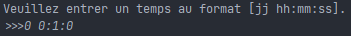
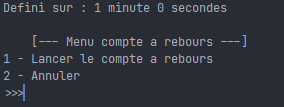
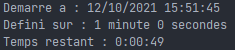
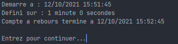

Il vous permet de recevoir un signal après un temps que vous avez prélablement déterminé.
L'affichage est le suivant lorqu'on démarre le compte à rebours :

Après avoir remplis le temps au format demandé vous passez au menu suivant :
- Vous pouvez lancer le compte à rebours
- Vous pouvez annuler
L'affichage est le suivant :

Après avoir choisi de lancer le compte à rebours, vous pourrez avoir un affichage du temps restant avant la fin du compte à rebours :

Lorsque le compte à rebours est arrivé à la fin du temps impartis alors vous verrez l'affichage suivant :
